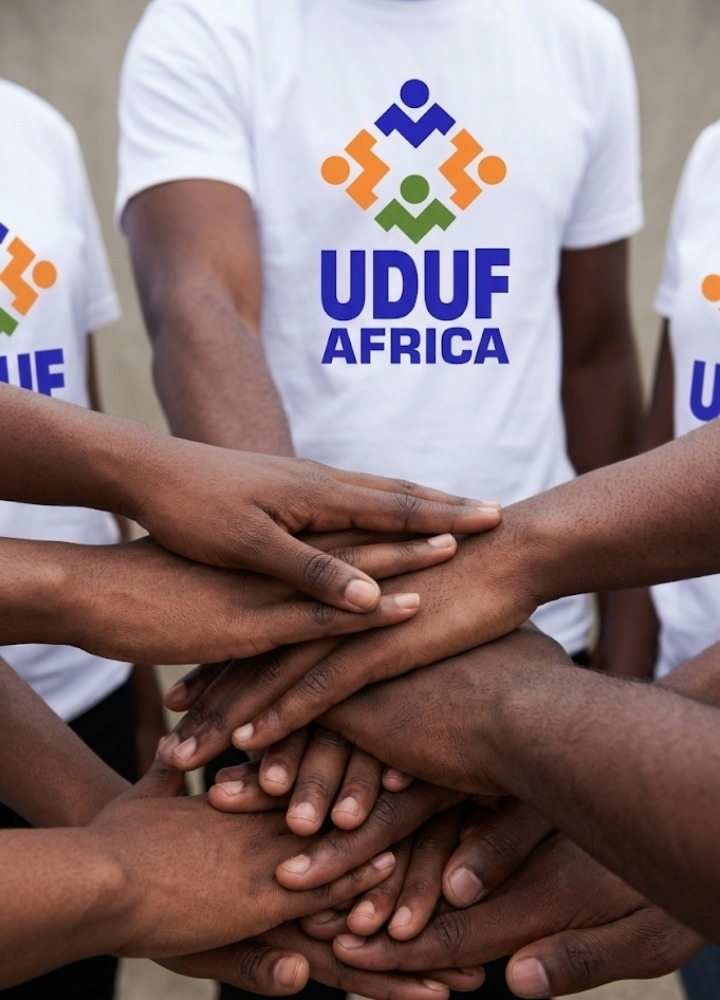

Volunteerism is at the heart of UDUF Africa. It is not just about giving your time — it is a pathway to leadership, personal growth, and community transformation. Join a movement of young Africans committed to serving humanity and building a better continent.

Volunteering in UDUF Africa is an investment in yourself and your community. Here's what you gain:
Organise activities, manage people, solve problems, and take responsibility — the same skills required for leadership in business and community development.
Get hands-on experience in event planning, project management, public speaking, teamwork, and community development that strengthens your CV.
Connect with leaders, entrepreneurs, professionals, and mentors across Africa. Build relationships that open doors to opportunities.
Cultivate discipline, commitment, humility, teamwork, and service — qualities that make you a respected leader in your community.
Be part of a movement that transforms communities through youth development, leadership training, and entrepreneurship empowerment.
Experience the joy of making a difference. Service often gives deeper fulfilment than personal gain.
Every volunteer in UDUF Africa commits to these principles:
Be ready to commit time and effort to programmes, meetings, and community initiatives.
Attend training sessions, workshops, and programmes that help you grow as a leader.
Understand and support UDUF Africa's goal of raising ethical, responsible leaders.
Work cooperatively with other members and support collective decisions.
Accept assignments and carry them out with seriousness and commitment.
Represent the organisation with honesty, discipline, and positive character.
UDUF Africa Volunteer Pledge
I pledge today to serve faithfully as a volunteer of UDUF Africa.
I commit my time, energy, and skills to support the mission of developing responsible leaders and entrepreneurs in Africa.
I will serve with integrity, discipline, and dedication.
I will respect my fellow members and work in unity to achieve our shared vision.
I will contribute positively to the growth of the organisation and the development of our communities.
I understand that through volunteering I am building my leadership capacity and contributing to the transformation of Africa.
With honour and commitment, I pledge to serve.
Follow these simple steps to become a UDUF Africa volunteer:
Take our free online Volunteer Orientation Course to understand our vision, values, and expectations.
Successfully complete the course and receive your certificate of completion.
Join our physical induction at the Onitsha Business School to meet the team.
Join a committee, participate in events, and begin your journey of impact.